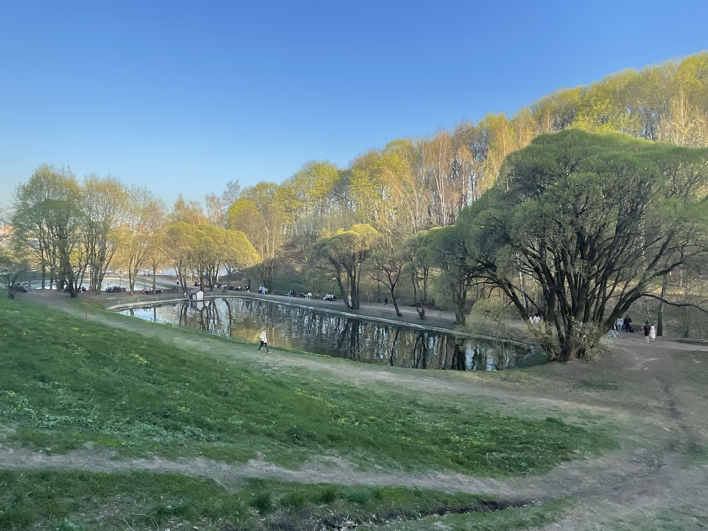
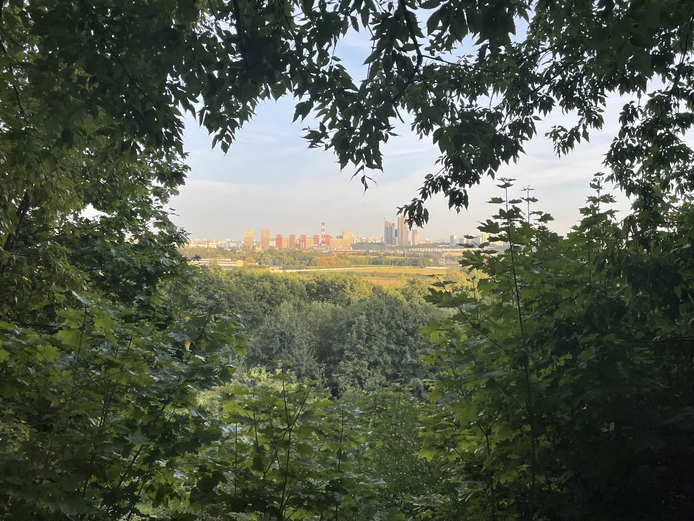

Фото



Музей-заповедник «Коломенское» — исторический парк и музей под открытым небом в Москве, известный своими архитектурными памятниками и живописными пейзажами.
Расположенный на берегу Москвы-реки, Коломенское предлагает посетителям уникальную возможность окунуться в атмосферу древней Руси,
прогуливаясь по его аллеям и наслаждаясь видами на старинные церкви, дворцы и деревянные постройки.
Этот парк понравится тем, кто интересуется историей, архитектурой, культурой или просто природой России.
© Все права защищены.